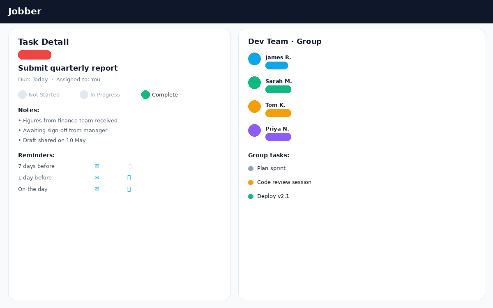
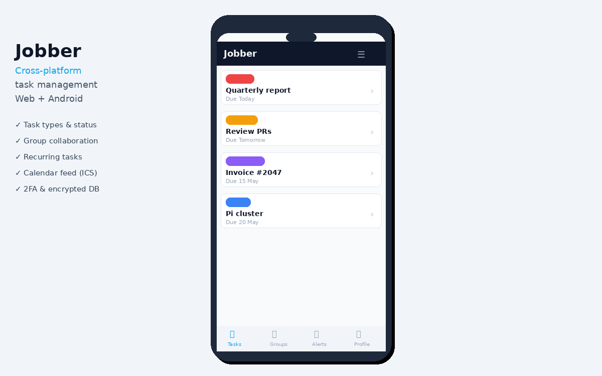

Project
Taskit
Cross-platform task management · Node.js / TypeScript / Kotlin
Taskit is a full-featured, self-hosted task management application built for real-world use — whether you're tracking personal to-dos, running collaborative projects with a small team, or both. It ships as a responsive web app and a native Android app, sharing a single Node.js/TypeScript back-end.
The design brief was simple: something that gets out of the way. No subscription tiers, no bloat — just tasks, status, deadlines, and the people working on them. Everything runs on your own server, with an encrypted SQLite database so your data stays yours.

Task list — colour-coded types, status badges, quick filters
Key features
- Tasks with custom types, due dates, status tracking (Not Started → In Progress → Complete), and deferral
- Recurring tasks — next occurrence created automatically on completion
- Per-task notification preferences: email and/or browser push at 7 days, 1 day, and on the day
- Group collaboration — shared task boards with invite links, QR codes, and role-based access
- Private ICS calendar feed — subscribe in any calendar app
- Magic-link login, password login, two-factor authentication (OTP), and account lockout protection
- Full admin panel: SMTP config, user management, reports, stats dashboard
- Database encrypted at rest via SQLCipher; passwords hashed with bcrypt

Task detail with notification prefs alongside the group members panel

Android app built in Kotlin, sharing the same back-end